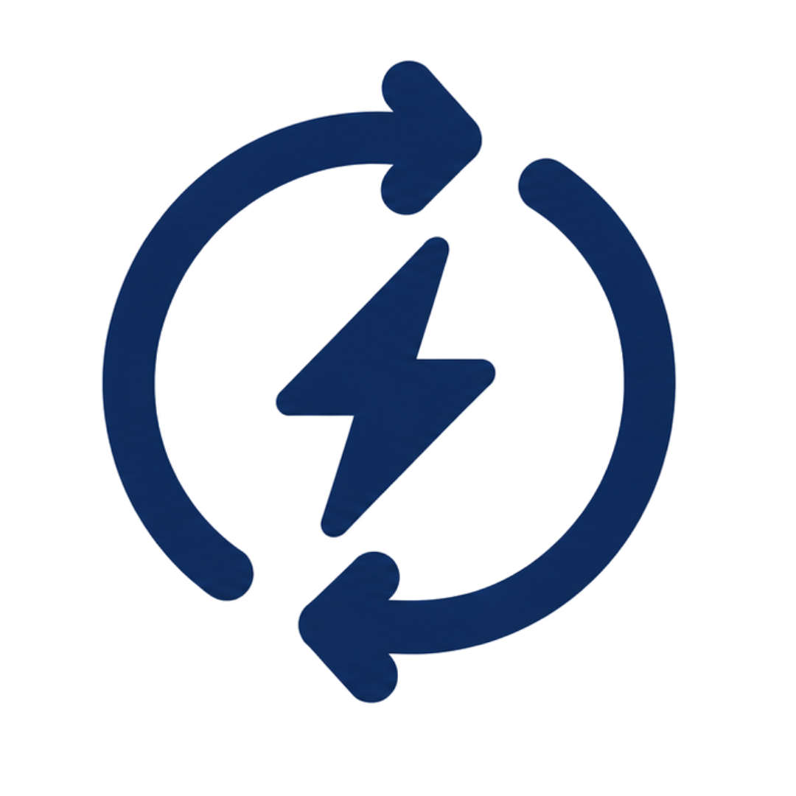

The problem
Green hydrogen production fails today because of a tradeoff between…
Cost
High catalyst material cost makes large-scale deployment economically unfeasible

Efficiency
Excessive cell voltage raises electricity consumption per kg of hydrogen produced
Durability
Membrane degradation causes frequent replacements and costly system downtime
Cost
Durability
Efficiency
breaks the tradeoff